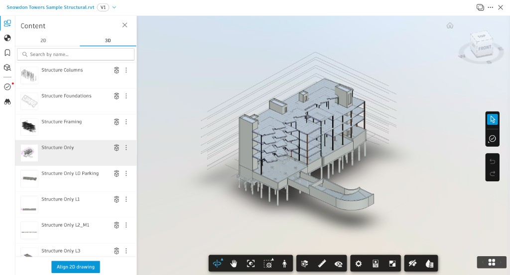

Structural model
Snowdon Towers Sample Structural.rvt, the one file in 03_Models. The header was read from the download. The picture is the Forma viewer, opened on the 3D tab at version V1.
- Folder
- 03_Models
- Size
- 32.3 MB
- Format
- Revit 2027
- Forma
- V1
This reading uses the file header and one Forma screen. Element counts, level elevations, and the sheet list inside the model stay unrecorded. The eight view names below are the ones inside the frame. The 3D list continues underneath, and the 2D tab stayed closed.
File on disk
The download copy is an OLE compound file. The first bytes are D0 CF 11 E0. Local modified time is 12 October 2026, 22:49. The saved-from path is the Autodesk sample dataset on the machine that last saved it.
| Field stored in the file | Value |
|---|---|
| File name | Snowdon Towers Sample Structural.rvt |
| Size | 33,820,672 bytes (32.3 MB) |
| Format | 2027 |
| Build | 20260417_1515(x64) — 17 April 2026, 15:15, 64-bit |
| Author | Autodesk Revit |
| Client application | RevitApplication |
| Locale when saved | ENU |
| Worksharing | Not enabled |
| Username | Blank |
| Central model path | Blank |
| Single-user cloud model | False |
| Last save path | C:\CONTENT\26.07.15 - Sample Project Dataset\Proposed\Snowdon Towers Sample Structural.rvt |
| Unique document GUID | c6f2fd4e-b7bc-4f3e-a873-6bc8d11c75af |
| Document increments | 18 |
The same GUID is stored again as the central model’s episode GUID for the last reload-latest, with version number 18. Worksharing is off, so there is no central path to follow.
Forma viewer
The viewer header matches the file name and shows a V1 badge, the same version mark recorded for S102 in Report 04. The Content panel is on 3D. The highlighted row, and the picture on screen, is Structure Only.

| 3D view name in the frame | What the screen shows |
|---|---|
| Structure Columns | Listed above the open view. |
| Structure Foundations | Listed above the open view. |
| Structure Framing | Listed above the open view. |
| Structure Only | Highlighted. This is the picture. |
| Structure Only L0 Parking | Listed below the open view. |
| Structure Only L1 | Listed below the open view. |
| Structure Only L2_M1 | Listed below the open view. |
| Structure Only L3 | Last name visible. Further rows sit below the frame. |
In that picture the frame has floor plates at several heights, a tall wall on the left, a curved element at the lower front, and columns continuing below the lowest plate. Grid lines sit in the background. The view cube reads Top, Front, and Right. Align 2D drawing is on the panel and was left unused. L0, L1, L2_M1, and L3 appear here as view names. They are not a level schedule.
Links saved with the file
The transmission record lists six external references. Each was last saved as Loaded. Transmit is false, so the linked files are references, not copies packed inside this RVT. The four models are absent from the Project Files download. Their last-saved paths point at the Revit 2027 Samples folder on the saving machine.
| Kind | File | Last saved location | Element id |
|---|---|---|---|
| Revit link | Snowdon Towers Sample Architectural.rvt | C:\Program Files\Autodesk\Revit 2027\Samples\ | 576455 |
| Revit link | Snowdon Towers Sample HVAC.rvt | C:\Program Files\Autodesk\Revit 2027\Samples\ | 787016 |
| Revit link | Snowdon Towers Sample Electrical.rvt | C:\Program Files\Autodesk\Revit 2027\Samples\ | 805013 |
| Revit link | Snowdon Towers Sample Plumbing.rvt | C:\Program Files\Autodesk\Revit 2027\Samples\ | 876480 |
| Assembly code table | AssemblyCode_Sample.txt | C:\ProgramData\Autodesk\RVT 2027\Libraries\English-Imperial\US\ | 1032798 |
| Keynote table | Keynotes_Sample.txt | C:\ProgramData\Autodesk\RVT 2027\Libraries\English-Imperial\US\ | 1032799 |
The four Revit links use the path type Relative to Central Model. The two tables use Relative to Library Locations, from the English-Imperial US library. The element ids identify those reference instances. They are not counts of columns, beams, or foundations.
Sheets in the same download
Report 03 lists the PDFs and DWGs named S102, S103, S107, S108, and S600. Those sheet numbers are not stored as plain text in this RVT; Revit keeps the model database in compressed streams. This page leaves the sheets as separate files in the download.